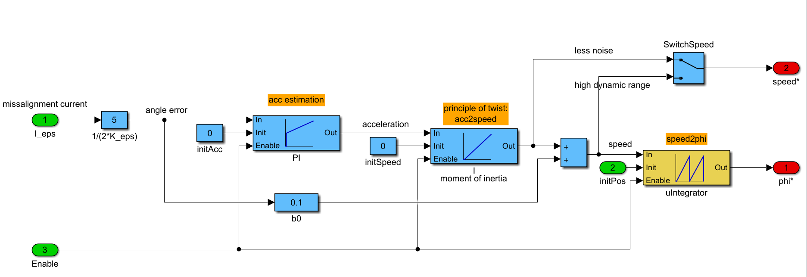

| Inports
| |
| phi_eps | rotor angle estimation error |
| n0 | Initial speed preloaded at rising edge of Enable signal |
| phi0 | Initial rotor angle preloaded at rising edge of Enable signal |
| Enable | Enable == 0: Deactivation of this block; Outputs are set to zero Enable 0->1: Preload of angle and speed for internal integrators Enable == 1: Activation of this block |
| Outports
| |
| n | Angular speed |
| phi | Estimated electrical rotor angle |
| Mask Parameters | ||
| Name | ID | Description |
| Jp | 1 | Moment of inertia of rotor (and load) |
| fo | 2 | Frequency of observer pole. The higher the pole is chosen, the more dynamic is the angle estimation |
| p | 3 | Number of pole pairs |
| estimation | 4 | Select where to place the emphasis of the speed output: dynamic or noise |
| method | 5 | Discretization method of of used LTI systems (PI, I) |
| n_max | 6 | Maximum (mechanical) speed (Only used for scaling in fixed point implementations) |
| ts_fact | 7 | Multiplication factor of base sampling time (in integer format) |
Calculates rotor angle and speed based on angle-error response due to voltage injection
BE AWARE:
For using this block with HFInjSquare-Block, set the sample time factor to 4 times the sample time factor of HFInjSquare-Block.
| FiP16 | 16 Bit Fixed Point Implementation |
| FiP32 | 32 Bit Fixed Point Implementation |
| Float32 | 32 Bit Floating Point Implementation |
16 Bit Fixed Point Implementation
| Inports Data Type
| |
| phi_eps | int16 |
| n0 | int16 |
| phi0 | int16 |
| Enable | bool |
| Outports Data Type
| |
| n | int16 |
| phi | int16 |
32 Bit Fixed Point Implementation
| Inports Data Type
| |
| phi_eps | int32 |
| n0 | int32 |
| phi0 | int32 |
| Enable | bool |
| Outports Data Type
| |
| n | int32 |
| phi | int32 |
32 Bit Floating Point Implementation
| Inports Data Type
| |
| phi_eps | float32 |
| n0 | float32 |
| phi0 | float32 |
| Enable | bool |
| Outports Data Type
| |
| n | float32 |
| phi | float32 |